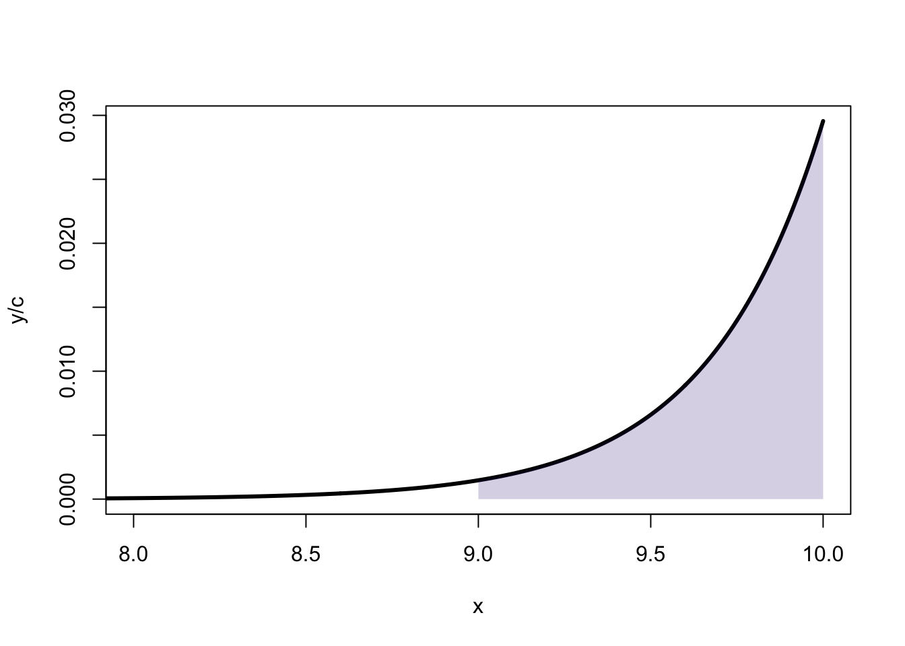

Estimación bayesiana
intervalos de confianza (F) vs. intervalo de credibilidad (B)
Una máquina funciona perfectamente mientras tiene una sustancia que la protege. Sin embargo, esta sustancia se va consumiendo y cuando se agota, después de un tiempo \(\theta\), puede fallar en algún momento aleatorio que sigue una distribución exponencial. El tiempo que pasa hasta que produce la falla,\(x\), sigue una distribución exponencial truncada dada por:
\[ f(x|\theta) = \left\{ \begin{array}{ll} 0 & x < \theta \\ e^{-(x-\theta)} & x > \theta \\ \end{array} \right. \]
Se mide el tiempo de falla de tres máquinas obteniendo: \(\text{datos} = \{10,12,15\}\). El objetivo es, a partir de estos datos, inferir \(\theta\). En particular, queremos un intervalo de confianza frecuentista y un intervalo de credibilidad bayesiano para \(\theta\).
Intervalo frecuentista
El intervalo de confianza asintótico para un estimador \(\theta\) es \(\text{CI}_{95} \approx \hat{\theta} \pm 2~\sqrt{\mathbb{V}(\hat{\theta})}\). Observando que \(y = x - \theta\) es exponencial con parámetro 1, la esperanza de \(y\) es \(E(y)=1\) y la varianza \(\mathbb{V}(y)=1\), para \(x\) tenemos:
\[ \begin{array}{l} E(x) = \theta + 1 \\ \mathbb{V}(x) = \mathbb{V}(y+\theta) = 1 \end{array} \]
Por lo tanto, un estimador de \(\theta\) es:
\[ \hat{\theta} = \frac{1}{N} \sum_{i=1}^N x_i - 1 \\ \] que tiene una varianza \(\mathbb{V}(\hat{\theta}) = \frac{1}{N^2} \sum \mathbb{V}(x_i) = \frac{1}{N}\). Por lo tanto, el intervalo de confianza del 95% asintótico es:
\[ \text{CI}_{95} \approx (\hat{\theta} - 2 / \sqrt{N}, \hat{\theta} + 2 / \sqrt{N}) \\ \]
Usando los \(\text{datos} = \{10,12,15\}\), obtenemos que:
\[ \begin{array}{ll} \color{blue}{ \hat{\theta} } & \color{blue}{ \approx 11.3 } \\ \color{blue}{ \text{CI}_{95} } & \color{blue}{ \approx (10.2, 12.5) } \end{array} \]
Este intervalo de confianza llama la atención porque claramente \(\theta\), el tiempo a partir del cual la máquina comienza a fallar no puede ser mayor que el mínimo entre todos los tiempos de falla que se midieron. O sea: \(\theta <10\)!!
Intervalo bayesiano
Tenemos que encontrar la distribución de probabilidad posterior \(P(\theta|\text{datos})\):
\[ \require{mathtools} \definecolor{bayesred}{RGB}{147, 30, 24} \definecolor{bayesblue}{RGB}{32, 35, 91} \definecolor{bayesorange}{RGB}{218, 120, 1} \definecolor{grey}{RGB}{128, 128, 128} \color{bayesorange} \overbracket[0.25pt]{P(\theta \mid \text{datos})}^{\text{Posterior}} \sim \color{bayesred} \overbracket[0.25pt]{P(\theta)}^{\text{Prior}} \times \color{bayesblue} \overbracket[0.25pt]{P(\text{datos} \mid \theta)}^{\text{Likelihood}} \] Como prior vamos a usar una distribución uniforme entre 0 y algún número elevado \(\theta_{max}\) que sea superior a cualquier tiempo de falla razonable (por ejemplo \(\theta_{max}=10^{10}\)). El likelihood es:
\[ \begin{array}{ll} L(\theta) & = P(\text{datos} \mid \theta) = \prod_{i=1}^{N} f(x_i \mid \theta) \\ & \sim \left\{ \begin{array}{ll} \exp(N\theta) & \theta < \text{min}(x_i) \\ 0 & \theta > \text{min}(x_i) \end{array} \right. \end{array} \]
Por lo tanto, la distribución posterior es:
\[ \definecolor{bayesorange}{RGB}{218, 120, 1} \color{bayesorange}{P(\theta \mid \text{datos})} \sim \left\{ \begin{array}{ll} e^{3\theta} & 0 < \theta < 10 \\ 0 & \theta > 10 \end{array} \right. \] Ahora, un intervalo del 95% de credibilidad para \(\theta\) es un intervalo \((a,10)\) tal que
\[ \frac{\int_a^{10} e^{3\theta} ~ d\theta }{\int_0^{10} e^{3\theta} ~ d\theta } = 0.95 \]
Haciendo la cuenta se obtiene que \(a=9\) y por lo tanto, condicional al modelo y a los datos, podemos afirmar que existe una probabilidad del 95% de que el tiempo en el cual se agota el líquido necesario para que funcione la máquina, \(\theta\), esté entre 9 y 10.
Recordar
Un intervalo de confianza no es una afirmación probabilística sobre \(\theta\).
¿Funciona mal el intervalo frecuentista?
¿Por qué el intervalo frecuentista queda enteramente por afuera de la región aceptable para el parámetro \(\theta\)? El intervalo de confianza frecuentista, por definición, contiene al parámetro verdadero con una probabilidad del 95%. Esto quiere decir que si tomamos muchas muestras de tamaño 3 (como en este problema) y para cada muestra aleatoria calculamos el intervalo de confianza, el 95% van a incluir al verdadero. Lo que ocurre con estos datos es que por mala suerte nos tocó uno de los intervalos de ese 5% que no contiene al verdadero.
Verifiquemos que el intervalo de confianza asintótico funciona bien. Al ser asintótico, debería ser correcto para un tamaño de muestra grande, pero en este caso \(n=3\) y podría no ser válido como intervalo de confianza. Para ver si es el caso, vamos a simular muchas muestras aleatorias de \(n=3\) para un parámetro \(\theta=10\) fijo y para cada una vamos a verificar si el intervalo de confianza contiene al valor verdadero.
n = 3
theta = 10
Nit = 10000
ok = 0
for (i in 1:Nit){
x = rexp(n, 1) + theta
theta.e = mean(x) - 1
ci = c(theta.e - 2/sqrt(n), theta.e + 2/sqrt(n))
if (theta > ci[1] & theta < ci[2]){
ok = ok + 1
}
}
# cobertura del intervalo de confianza
print(ok/Nit)[1] 0.9574De las 10.000 muestras aleatorias con \(N=3\) simuladas alrededor del 95% contiene al parámetro \(\theta=10\).
Problema
Originalmente planteado por Berger y Wolpert (1984), yo lo tomé del libro de Wasserman “All of Statistics” (¡excelente!).
Supongamos que hay dos variables aleatorias \(X_1\) y \(X_2\) independientes que pueden tomar el valor 1 o -1 con igual probabilidad (¡dos monedas!). Definimos otras dos variables así:
\[ \begin{array}{ll} Y_1 &= \theta + X_1 \\ Y_2 &= \theta + X_2 \end{array} \] Supongamos que sólo se miden \(Y_1\) e \(Y_2\) y se quiere estimar \(\theta\) que está fijo.
1- Verificar que \(C\), definido a continuación, es un intervalo de confianza del 75% para \(\theta\):
\[ C = \left\{ \begin{array}{ll} Y_1 - 1 & \text{si } Y_1 = Y_2 \\ (Y_1 + Y_2)/2 & \text{si } Y_1 \ne Y_2 \end{array} \right. \]
2- Supongan ahora que se mide en un experimento \(y_1 = 15\) y \(y_2=17\), ¿cuál es el intervalo de confianza del 75% para \(\theta\)? ¿cuánto vale \(\theta\)?